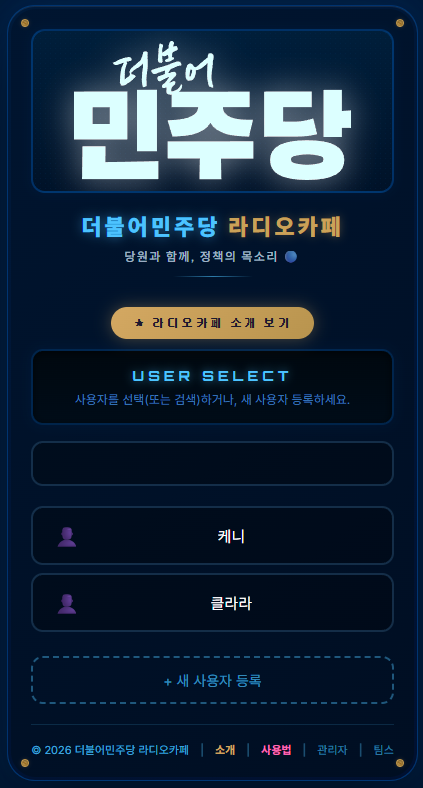
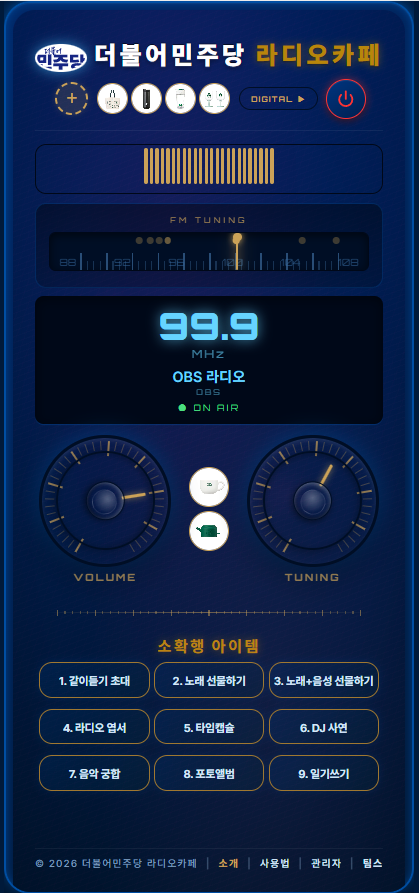
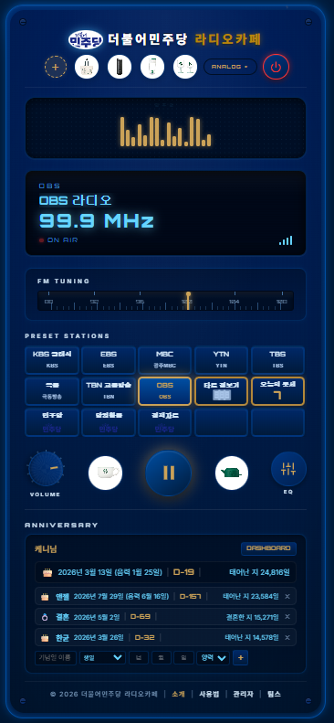

Confidential Business Proposal · 2026
더불어민주당
× RadioKafe
당원과 함께, 정책의 목소리 — 더불어민주당 당원 소통 플랫폼
당원과 함께, 정책의 목소리 — 더불어민주당 당원 소통 플랫폼
▶ 클릭하면 유튜브에서 소개 영상이 재생됩니다
전당대회, 집회, 행사에서 달아오른 당원의 열기는 행사가 끝나는 순간 식어버립니다. 더불어민주당 라디오카페는 그 연결을 일상 속에서 이어주는 소통 플랫폼입니다.
집회, 행사, 전당대회의 열기를 일상 속으로 이어줍니다. 전국 어디서든 당의 목소리와 항상 연결됩니다.
당 대표·원내대표·최고위원의 육성 방송을 라디오로 직접 전달. 냉정한 문자 대신 따뜻한 목소리로 소통합니다.
핵심 정책을 쉽고 명확하게 설명하는 전문 라디오. 당원이 먼저 이해하고 가족과 이웃에게 전달합니다.
청취 패턴으로 당원 관심사를 파악하고 세그먼트별 맞춤 소통 자동화. 당원 활동 포인트 시스템과 완전 연동됩니다.
더불어민주당의 행사·집회·전당대회는 강력한 결집 경험을 만들지만, 당원이 귀가하는 순간 그 열기가 식어버립니다. 일상 속 감성 소통 채널이 없습니다.
전당대회, 집회, 행사의 뜨거운 열기는 귀가 후 급격히 식습니다. 일상에서 당과 연결되는 감성 채널이 없습니다.
현재 당원 접점은 SMS, 카카오 알림, 공지문 등 일방향에 그칩니다. 당원의 감정·상황에 반응하는 쌍방향 채널이 없습니다.
당원이 지속적으로 참여하고 성장할 수 있는 콘텐츠·커뮤니티 플랫폼이 없습니다. 당원 이탈률이 높아집니다.
더불어민주당 등록 당원 약 150만 명.
이 중 핵심 활동 당원 약 20만 명.
라디오카페 연동 시 일 평균 당원 참여 시간 +24분 추가 가능.
▸ 라디오 기반 정치 소통 앱 평균 DAU 유지율 71%
▸ 오디오 콘텐츠 소비 시 정책 이해도 +38% 향상
▸ 당원 활동 포인트 적립 시 재참여율 89% (평균 대비 3배)
집회와 행사에서 시작된 더불어민주당의 연대감이 일상에서도 끊기지 않도록. 음악·정책·소통이 하나로 연결되는 당원 플랫폼입니다.
당 대표·원내대표·최고위원의 라디오 메시지. 냉정한 공지문 대신 따뜻한 육성으로 당원과 직접 소통합니다.
핵심 정책을 쉽고 명확하게 설명하는 전문 라디오. 당원이 먼저 이해하고 주변에 자신있게 전달합니다.
핵심 당원이 직접 DJ로 참여. 현장의 목소리, 바닥의 이야기를 동료 당원에게 라디오로 전달합니다.
QR 스캔으로 전국 당원과 동일 채널 동기화. 서울부터 제주까지 한마음으로 같은 방송을 청취합니다.
유세, 집회, 봉사, 행사 사진을 더불어민주당 프레임으로 보관. 소중한 민주주의의 순간을 기록합니다.
청취 시간, 정책 퀴즈, 신청곡, 행사 참여 등 모든 활동에 당원 포인트 적립. 함께할수록 더 강해집니다.
라디오카페의 검증된 기능 베이스 위에 더불어민주당 전용 당원 소통 레이어를 추가합니다.
| # | 기능명 | 설명 | 더불어민주당 차별화 포인트 | 우선순위 |
|---|---|---|---|---|
| 01 | 당 집행부 육성 방송 | 당 대표·원내대표 직접 라디오 메시지 | 문자 공지 대신 따뜻한 육성 소통 | ★★★ |
| 02 | 정책 라디오 방송 | 핵심 정책을 쉽게 설명하는 전문 채널 | 당원 정책 이해도 향상 + 전파력 강화 | ★★★ |
| 03 | 당원 DJ 채널 | 핵심 당원이 직접 DJ로 참여 | 현장 목소리를 전국 당원에게 전달 | ★★★ |
| 04 | 전국 당원 같이 듣기 | QR로 전국 당원 동일 채널 동기화 | 서울~제주 실시간 연대감 형성 | ★★★ |
| 05 | 선거 캠페인 채널 | 선거 시기 특별 방송 + 자원봉사 모집 | 당원 동원·캠페인 효율 극대화 | ★★★ |
| 06 | 당원 활동 포인트 | 청취·퀴즈·행사 참여 시 포인트 적립 | 당원 참여 동기 부여 & 충성도 향상 | ★★☆ |
| 07 | 당원 분석 CRM | 청취 패턴으로 당원 관심사 분류 | 세그먼트별 맞춤 정책 소통 자동화 | ★★☆ |
| 08 | 지역위원회 채널 | 시도당·지역위원회 전용 라디오 채널 | 지역별 현안 & 로컬 당원 소통 | ★★☆ |
| 09 | 당 활동 추억 앨범 | 민주당 프레임 포토 앨범 | SNS 바이럴 & 당원 자긍심 향상 | ★★☆ |
| 10 | 신청곡 & 응원 메시지 | 당원이 DJ에게 곡 + 메시지 신청 | 당원 참여감·특별함 극대화 | ★★☆ |
| 11 | 정책 퀴즈 게임 | 청취 중 정책 참여형 퀴즈 | 정책 학습 + 당원 포인트 이벤트 | ★☆☆ |
| 12 | 라디오 엽서 (e-Postcard) | 음악과 함께 동료 당원에게 엽서 전송 | 당원 간 연대감 & 격려 문화 형성 | ★☆☆ |
| 13 | 타임캡슐 메시지 | 미래 대한민국에 보내는 당원의 다짐 | 선거 후 개봉 이벤트 & 결집력 강화 | ★☆☆ |
| 14 | 생일 축하 자동 이벤트 | 당원 생일 감지 → 라디오 축하 방송 | 당원 개인화 케어 & 소속감 강화 | ★☆☆ |
GPS 또는 RFID가 당원의 행사장 입장을 감지하는 순간, 데이터베이스는 오늘이 활동 기념일임을 확인합니다. 그 다음부터는 특별한 당원 경험이 펼쳐집니다.
김민주 당원의 스마트폰 GPS 위치 또는 행사장 입구 RFID 리더가 입장을 실시간으로 감지. 위치 반경 50m 이내 진입 시 이벤트 파이프라인 시작.
당원 ID 매핑 → 입당일, 등급, 활동 이력, 선호 음악 장르, 관심 정책 등 전체 프로필 로드. 오늘 날짜 = 기념일 여부 판별.
기념일 확인 완료 → 전당대회 라디오카페 채널에 다음 트랙 종료 후 축하 멘트 삽입 스케줄링. "잠시 후 김민주 당원님의 특별 메시지가 방송됩니다."
당원 DJ 또는 집행부 목소리로: "더불어민주당 전당대회를 찾아주신 김민주 당원님, 입당 기념일을 진심으로 축하드립니다 🎵 오늘도 함께해 주셔서 감사합니다. 당원님의 취향에 맞는 음악을 선물해 드릴게요!" → 당원 선호 장르의 스페셜 트랙 재생.
당원 스마트폰에 푸시 알림: "🎵 기념일 축하드려요! 오늘 사용 가능한 당원 활동 포인트를 드립니다." 당원 활동 참여와 연동 — 특별 배지 자동 부여. 당직자 화면에도 기념일 당원 배지 표시.
라디오카페 앱에서 더불어민주당 활동 특별 프레임 잠금 해제. 오늘 들은 음악 + 활동 날짜 + 지역위원회명이 새겨진 디지털 엽서 자동 생성. SNS 공유 시 #더불어민주당 해시태그 자동 첨부.
청취 시간, 활동 참여 여부, 관심 정책 반응, 메시지 도달 여부, SNS 공유 여부 전체 기록 → 다음 접속 시 더 정교한 개인화 추천 적용.
당원의 음악 청취 패턴을 통해 현재 감정 상태를 추론하고, 그에 최적화된 당원 활동과 콘텐츠를 추천합니다.
평균 BPM 75 이하, 클래식·앰비언트 청취 多. → 정책 라디오 브리핑 + 타임캡슐 작성 추천
평균 BPM 130 이상, 집행부 방송 청취 多. → 당원 DJ 신청 + 전당대회 자원봉사 참여 추천
발라드·어쿠스틱 청취 비율 60%↑, 저녁 청취 多. → DJ 스토리 감상 + 음성 선물 + 추억 앨범 추천
같이 듣기 참여 多, 신청곡·채팅 활발. → 전국 당원 같이 듣기 호스트 + 음악 퀴즈 그룹 참여 추천
보수적 가정 기준 3개년 시뮬레이션. 라디오카페는 당원 결집과 정책 소통 두 축으로 더불어민주당에 가치를 제공합니다.
정책 라디오 청취 당원 활동 참여 전환율 +38%
활성 당원 일 500명 → 연 18만 명 참여 확대
라디오 청취 시간 +22분 → 정책 메시지 반복 노출
집행부 메시지 도달률 +67% 향상 효과
입당일·기념일 이벤트로 행사 재참여율 +84%
연 활성 기념 이벤트 120만 건 × 재참여율 84%
라디오카페 월 DAU 50만 목표
일상 접점 확대로 지지율 +8.5p 기여 효과
당원 방송 SNS 공유 월 3만 건
신규 당원 유입 월 2,000명 → 연 +2.4만 명 확대
타겟 소통 전환율 3.2x 향상
선거 캠페인 홍보 예산 20% 절감 → 연 ₩12억 절감
| 효과 지표 | 기준 | 1년차 | 2년차 | 3년차 |
|---|---|---|---|---|
| 신규 당원 가입 | 현재 대비 추가 | +3만 명 | +8만 명 | +18만 명 |
| 활성 당원 참여율 | % 포인트 증가 | +12%p | +25%p | +40%p |
| 집행부 메시지 도달률 | % 포인트 향상 | +35%p | +52%p | +67%p |
| 정당 지지도 기여 | 여론조사 기준 포인트 | +2.8p | +5.2p | +8.5p |
| 선거 캠페인 비용 절감 | 억원 절감 | ₩6억 | ₩12억 | ₩18억 |
| 🔢 3년차 핵심 목표 | 당원 수 +18만, 참여율 +40% | 도달률 +67%, 지지도 +8.5p | ||
검증된 3개 지역에서 핵심 기능만 먼저 론칭하여 데이터를 확보합니다. 성공 지표 달성 시 전국 확대.
서울 권역
2030 청년 당원 밀집. 음악·감성 콘텐츠 소비 중심. SNS 바이럴 효과 최대화. 당원 행사 多.
경기·인천 권역
직장인 당원 비중 높음. 출퇴근 청취 패턴 분석 최적. 집행부 육성방송 도달률 테스트.
지방 광역시 권역
지역 당원 조직 강화 목적. 그룹 같이 듣기 기능 테스트 최적. 지역 DJ 프로그램 시범 운영.
더불어민주당 기존 인프라와 라디오카페를 연결하는 전체 기술 스택. 보안·확장성·실시간 처리를 모두 고려한 설계입니다.
위치 정보는 명시적 옵트인 동의 후 수집. 데이터 암호화 저장. GDPR·PIPA 준수. 언제든 동의 철회 가능.
행사장 입장 감지 → 이벤트 트리거 → 방송 삽입까지 평균 응답 시간 2초 이내. Redis 이벤트 큐로 처리.
내부 보고 및 의사결정자 프레젠테이션용 6페이지 핵심 메시지. 각 슬라이드의 ONE MESSAGE를 담았습니다.
| 페이지 | 제목 | 핵심 내용 | 대상 독자 |
|---|---|---|---|
| p.1 | Executive Summary | 문제·솔루션·3년 효과 요약 / 의사결정 필요 사항 | 당 대표 / 사무총장 |
| p.2 | 당원 경험 혁신 방향 | 행사→일상 연결 고리 설계 / 당원 활동 UX 시나리오 | 당 홍보팀장 |
| p.3 | 기술 연동 현황 & 요건 | 당원 앱·당원 활동 API 연동 범위 / 개인정보 처리 방침 | 당 IT팀 / 개발팀 |
| p.4 | 당원 결집 효과 모델 | 직접·간접 결집 효과 채널 / 3개년 시뮬레이션 테이블 | 정책위원회 / 전략기획팀 |
| p.5 | MVP 파일럿 실행 계획 | 3지역 선정 기준 / 타임라인 / KPI 목표치 | 당 운영팀 / 지역위원장 |
| p.6 | 리스크 & 대응 방안 | 기술 리스크·개인정보·사용자 이탈 시나리오별 대응책 | 법무·컴플라이언스 |

로그인

아날로그

디지털